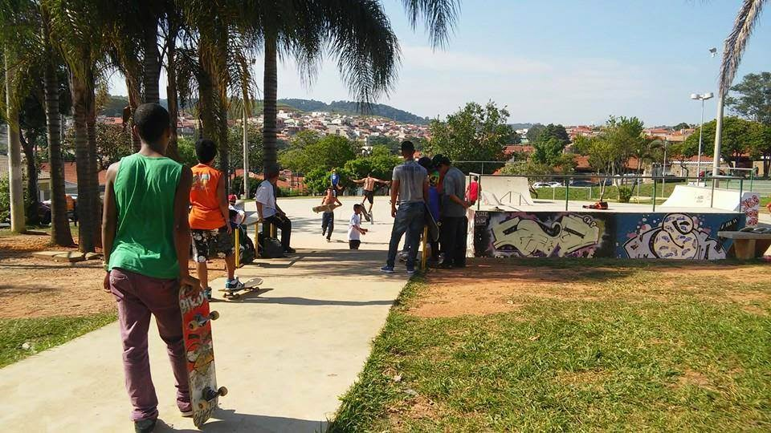
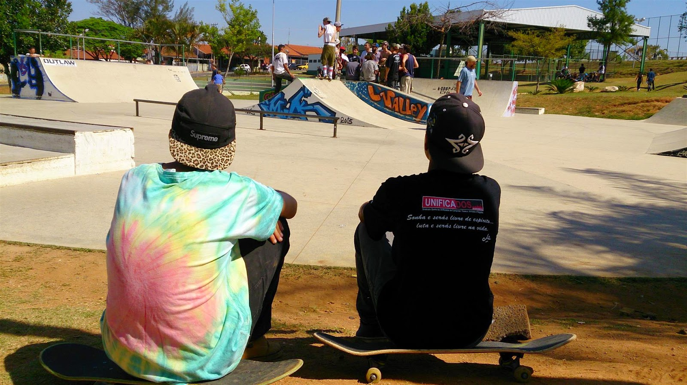

Conheça a diferença de grafite e pichação
Em muitas cidades ao redor do mundo, a arte urbana é uma forma popular de expressão cultural. No entanto, há uma grande diferença entre pichação e grafite, duas formas distintas de arte urbana.
A pichação é frequentemente vista como uma forma de vandalismo e é ilegal em muitas cidades. É caracterizada por marcas rápidas e ilegíveis, geralmente feitas com spray ou marcadores, sem consideração pelo contexto ou propriedade. A pichação geralmente é vista como uma forma de marcar território ou de expressar descontentamento com o sistema.
Por outro lado, o grafite é uma forma de arte urbana mais elaborada e intencional, que muitas vezes é feita com permissão ou em áreas específicas. Os grafites geralmente levam tempo para serem criados e apresentam imagens e cores vibrantes. Eles podem ser usados para transmitir uma mensagem ou simplesmente para adicionar beleza e interesse visual ao ambiente urbano.
Embora a pichação e o grafite sejam frequentemente agrupados como arte urbana, há uma clara distinção entre as duas formas. O grafite é visto como uma forma de expressão cultural positiva, enquanto a pichação é vista como um ato de vandalismo. É importante que as pessoas entendam a diferença entre as duas e respeitem a propriedade e a comunidade ao expressar sua criatividade nas ruas da cidade.

Rafael
É importante que as autoridades municipais incentivem o grafite como uma forma legítima de arte urbana e forneçam espaços adequados para artistas locais mostrarem seu talento. Isso pode ajudar a reduzir a pichação e melhorar a estética da cidade como um todo.
5/5
13/03/2023
Custodio
Eu acho que é importante lembrar que, embora a pichação possa parecer uma forma de expressão legítima para algumas pessoas, ela pode ter um impacto negativo na comunidade. Propriedades vandalizadas e ruas sujas podem criar um ambiente inseguro e desagradável para moradores e visitantes.
5/5
13/03/2023
Cumpri
É interessante notar como o grafite evoluiu ao longo dos anos e se tornou uma forma respeitável de arte em muitas partes do mundo. No entanto, ainda há muitas pessoas que consideram todas as formas de arte urbana como vandalismo e ilegalidade. É importante educar as pessoas sobre a diferença entre pichação e grafite e promover a aceitação da arte urbana como uma parte valiosa da cultura e da sociedade.
4/5
13/03/2023